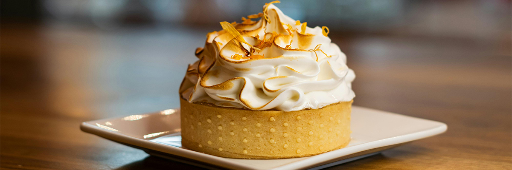

Crea, hornea y disfruta con Luna de Vainilla

Nube de Tres Chocolates
Una tarta elegante y espectacular con tres capas de mousse de chocolate. Un postre cremoso sorprendentemente fácil de preparar.

Velvet Esponjoso
Un esponjoso y húmedo cupcake Red Velvet con un toque de cacao, coronado con el inconfundible y frosting de queso crema.

Meringada de Limón
Una tarta de limón ácida y fresca sobre una base crujiente, cubierta por una dulce y dorada nube de merengue.